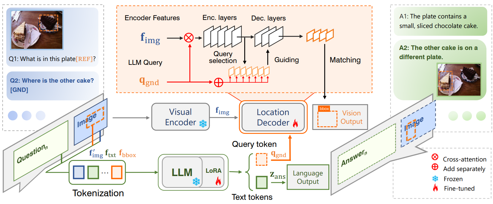

Tianren MaPh.D. CandidateLearning and Machine Perception Lab (LAMP) School of Electronic, Electrical and Communication Engineering University of Chinese Academy of Sciences (UCAS) Beijing, China, 100083. Email: matianren18@mails.ucas.ac.cn; Github: https://github.com/martian422; |

|
Biography
I am a Ph.D. candidate of LAMP at UCAS, advised by Prof. Qixiang Ye.
I got my B.E. degree in University of Chinese Academy of Sciences in 2022.
During my undergraduate studies, I participated in satellite projects and contributed to the development of remote sensing algorithms. My previous works focus on empowering large models to carry out instance-level comprehension, and I'm interested in advancing multimodal model's capability with flexible and finer-grained interactions through discrete representations.
Publications
 |
Tianren Ma, Lingxi Xie, Yunjie Tian, Boyu Yang, Qixiang Ye
ClawMachine: Learning to Fetch Visual Tokens for Referential Comprehension ICLR, 2025 [Paper] [Code] |
|  | Yunjie Tian*, Tianren Ma*, Lingxi Xie, Qixiang Ye
ChatterBox: Multimodal Referring and Grounding with Chain-of-Questions AAAI, 2025 [Paper] [Code] |
 |
Jihao Qiu*, Yuan Zhang*, Xi Tang*, Lingxi Xie, Tianren Ma, Pengyu Yan, David Doermann, Qixiang Ye, Yunjie Tian
Artemis: Towards Referential Understanding in Complex Videos NeurIPS, 2024 [Paper] [Code] |
* indicates equal contribution.